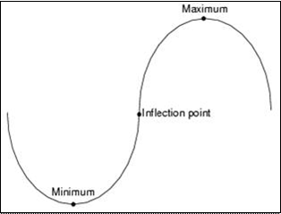
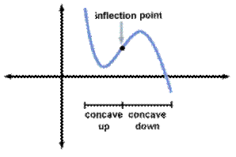
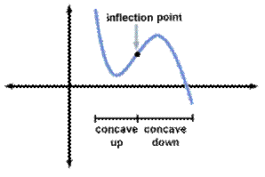

Graphs & Critical Points
HomeworkCritical Points - points where the nature of the graph changes
$\table \text"1) Maximum", \text"2) Minimum", \text"3) Point of Inflection",$
$\table \text"1) Maximum", \text"2) Minimum", \text"3) Point of Inflection",$
| concave down | |
|  | |
| concave up | |
Relative min & max are those points where the slope of the tangent (derative) = 0


Points of Inflection are where the derivative of the derivative = 0
a.k.a. the $2^{nd}$ derivative, denoted by $f''(x)$
ex) Determine the critcial points for the graph of $f(x)=3x^3-36x+1$a.k.a. the $2^{nd}$ derivative, denoted by $f''(x)$
| $1^{st}$ Derivative | $f(x)=9x^2-36$ | |
| replace $f'(x)$ with 0 | $0=9x^2-36$ | |
| solve for x | $±2=x$ | relative min or max |
| $2^{nd}$ Derivative | $f"(x)=18x$ | |
| replace f"(x) with 0 | 0=18x | |
| solve for x | 0=x | point of inflection |
To find the y value for each critical point...
| x value | $f(x)=3x^2-36x+1$ | $(x,y)$ |
|---|---|---|
| $x=2$ | $f(2)=3(2)^3-36(2)+1$ | $(2,-47)$ |
| $x=-2$ | $f(-2)=3(-2)^3-36(-2)+1$ | $(-2,49)$ |
| $x=0$ | $f(0)=3(0)^3-36(0)+1$ | $(0,1)$ |
To determine the type of critical point (cp), look up test points to either side in your x,y table...
Use $1^{st}$ derivative test
| test pt < cp > test pt | maximum |
|---|---|
| test pt < cp > test pt | minimum |
| test pt < cp < test pt | pt of inflection |
| test pt > cp > test pt | pt of inflection |
Use $1^{st}$ derivative test